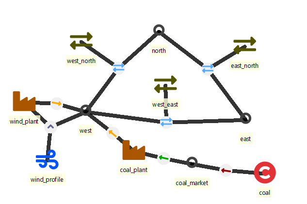
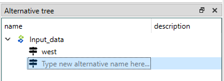
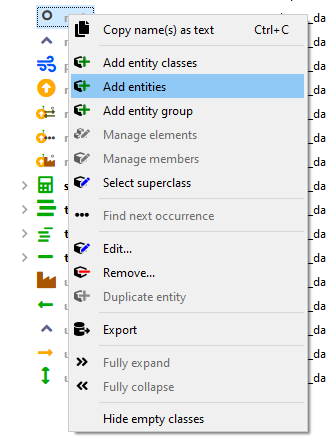
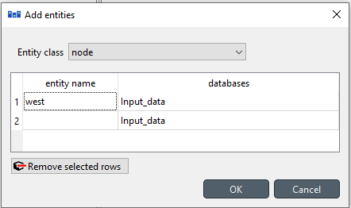
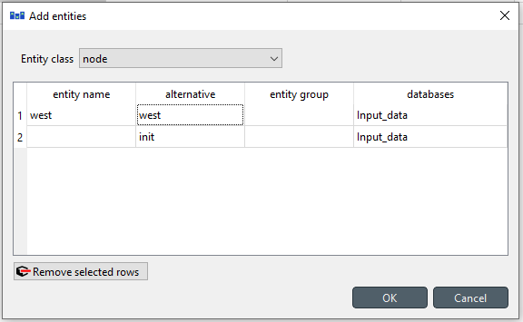
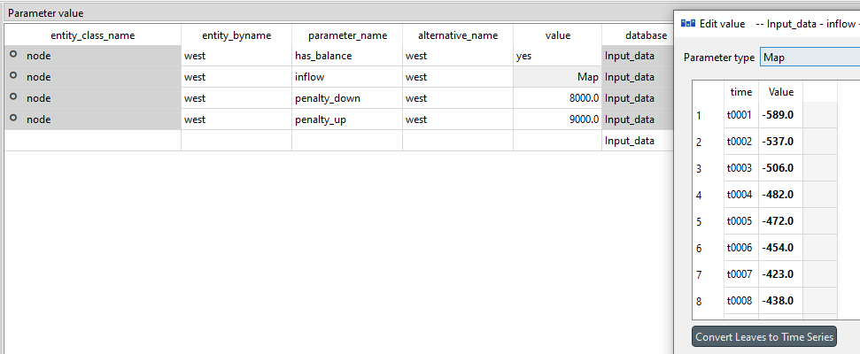
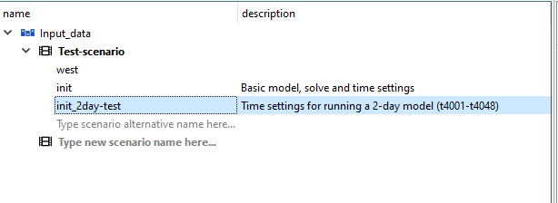
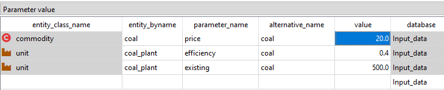
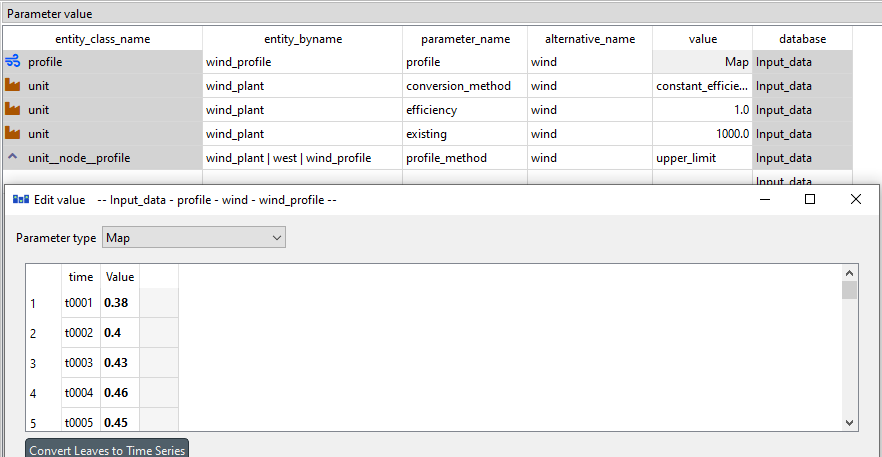
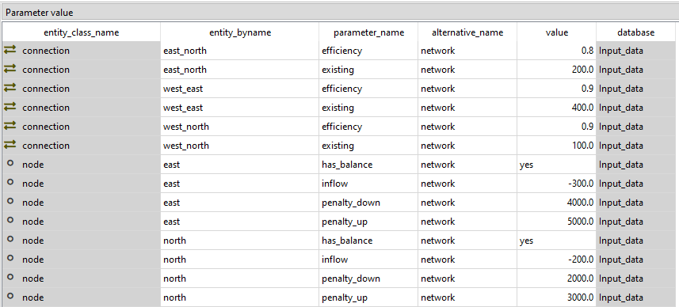

IRENA FlexTool tutorial
This tutorial walks you through building a small Coal + Wind power system from scratch over a 48-hour timeline. You will create one node at a time, add generation, connect a small transmission network, and watch each change move the dispatch and the slack penalties. Allow roughly 30–45 minutes the first time through. The tutorial assumes the FlexTool GUI is already installed — if not, follow Install with FlexTool GUI first.
Alternative execution interface: Spine Toolbox
If you prefer the Spine Toolbox workflow editor — typically for integrating FlexTool with other models, or for building custom input / output processing steps — the same Coal + Wind example can be built there. See Spine Toolbox and Install with Spine Toolbox.
Alternative data editor: Excel / LibreOffice
The model data shown in the screenshots below is edited in the Spine database editor, which the FlexTool GUI launches when you double-click an input source. If you would rather edit in a spreadsheet, export an Excel template, edit it, and re-import. See Excel as input/output. The modelling concepts in this tutorial are identical regardless of the editor.
Just want to see the finished version?
The same Coal + Wind scenarios are pre-built in templates/examples.sqlite. Add that file as an input source in a fresh project and you can run every scenario in this tutorial without building anything by hand. Building it step-by-step is the recommended way to learn the concepts.
What you're building
A three-node electricity system with a coal plant, a wind plant, and three interconnections, dispatched over a two-day timeline:

The model grows one alternative at a time. Each alternative is a self-contained piece of data — the first node, the coal plant, the wind plant, the three-node network — and scenarios are assembled by stacking alternatives on top of each other. That way every step can be run on its own and compared to the previous one.
Setting up the project
-
Launch the FlexTool GUI from the FlexTool installation directory:
python -m flextool.gui -
Create a new project. From the Project menu choose New project, name it
tutorial, and pick a location. The GUI createsprojects/tutorial/with an emptyinput_sources/folder and asettings.yaml. -
Add the seed input source. Click Add in the Input sources panel and pick
templates/time_settings_only.sqlitefrom the FlexTool repository. The GUI copies the file into your project'sinput_sources/(migrating it to the current schema version if needed) and renames it to whatever you typed in the dialog —tutorial.sqliteis a good name. This seed database already contains the basic time settings (initandinit_2day-testalternatives) that every FlexTool model needs. See How to create basic time settings if you want to know how those were built. -
Open the input source in the Spine database editor. Double-click the
tutorial.sqliterow in Input sources (or select it and press Edit). The Spine database editor opens in its own window — that is where the rest of the modelling steps happen.
Always commit before running
The Spine database editor stages changes locally until you commit them with Ctrl-Enter (or Session → Commit… from the menu). Until you commit, the FlexTool GUI sees the previous, uncommitted state. Every step below ends with a commit reminder for this reason.
Step 1 — A node with no units
The first alternative holds nothing but a single demand node. Running it on its own forces the model to fall back on slack variables, which is a useful sanity check: it shows what happens when there is no way to meet demand.
Add the alternative
In the Alternative tree widget of the Spine database editor, add a new alternative called west. Every entity and parameter added in this step will live under this alternative, so it can be combined into scenarios cleanly later on.

Add the entity
Right-click the node class in the Entity tree and choose Add entities. Name the new node west and click OK.


Open the Entity Alternative sheet and activate west in the west alternative. Entity Alternative decides whether an entity is part of a given alternative; parameter rows have their own alternative_name column and are independent.

Add parameters
Set the following parameters on the west node, all under the west alternative:
inflow— a map of negative values, one per timestep, representing demand. Map-type parameters take a column of timestep names and a column of values. Typing 48 rows by hand is tedious, so the easiest way is to copy the column fromtemplates/examples.sqlite(opened as a second input source) and paste it into your west node.penalty_up— e.g.9000. Cost of unmet upward demand. If nothing else can meet demand, the model "creates" energy at this price using an upward slack variable.penalty_down— e.g.8000. Cost of unabsorbed downward energy.node_type— balance. Forces the node to maintain an energy balance at every timestep. This is the default, so it can be left blank.
Penalties and slack variables keep the LP feasible at every timestep even when supply and demand do not match. They default to 10000 if not set; you change them only when you have real values, or when you want one node to be preferred over another for last-resort balancing (Step 4 uses this).

Commit with Ctrl-Enter and write an informative commit message. Until you commit, the staged changes are invisible to the FlexTool GUI.
Execute and inspect
Back in the FlexTool GUI:
- The Available scenarios panel rescans
tutorial.sqliteautomatically when you commit, but if it does not, press the Refresh button on the Input sources panel. -
You need a scenario to execute. Switch to the Spine database editor's Scenario tree and create a scenario Test-scenario that includes the alternatives init, init_2day-test, and west, in that order. Commit.

-
In Available scenarios, check Test-scenario and click Add checked scenarios to the execution list (or press F9).
- Press Execute in the Execution jobs panel. The job appears in the queue and produces a parquet result tree under
output_parquet/Test-scenario/when it finishes. - Press Results viewer under Output actions to inspect dispatch and slack. With no generators present, you should see the upward slack variable taking the full demand at penalty cost.
Alternative order matters
Lower alternatives override higher ones if they touch the same parameter. Test-scenario uses init_2day-test below init, so the 2-day timeset wins over init's full-year timeset — only 48 hours are solved.
Step 2 — Add a coal unit
Add a coal power plant feeding the west node from a fuel commodity.
Alternative and entities
Add a new alternative coal. Then add the following entities (all under coal in Entity Alternative, except commodity which is active by default):
unitcoal_plantnodecoal_marketcommoditycoalunit__inputNodecoal_plant, coal_market — the coal plant draws from the coal market.unit__outputNodecoal_plant, west — and outputs electricity to west.commodity__nodecoal, coal_market — links the coal commodity to its market node.
Parameters
On coal_plant (all under coal):
efficiency=0.4— 40 % thermal efficiency.existing=500— 500 MW of existing capacity.
On the coal commodity:
price=20— €/MWh of fuel.

Commit with Ctrl-Enter.
Execute and inspect
In the Spine database editor, create a new scenario coal with alternatives init, init_2day-test, west, coal (in that order), and commit. In the FlexTool GUI:
- Check coal in Available scenarios, Add checked to the queue, and Execute.
- Open the Result viewer and switch to comparison view (press X) to compare Test-scenario and coal side by side. The coal scenario should show the coal plant doing most of the work and the upward slack falling sharply.
Step 3 — Add a wind plant
Wind generation is modelled as a unit whose maximum output follows a time-varying profile instead of consuming a fuel.
Alternative and entities
Add alternative wind, then:
unitwind_plantprofilewind_profile — time-varying capacity factor (no commodity).unit__node__profilewind_plant, west, wind_profile — binds the profile to this unit and node.unit__outputNodewind_plant, west
Add wind_plant to Entity Alternative under wind. profile is active by default and is only used when bound through unit__node__profile (or node_profile).
Parameters
On wind_plant (under wind):
conversion_method= constant_efficiency.efficiency=1.existing=1000— 1000 MW of installed capacity.
On wind_profile:
profile— a map of hourly capacity factors (0–1). Copy this fromtemplates/examples.sqlitethe same way you copied theinflowmap.
On the wind_plant, west, wind_profile relationship:
profile_method= upper_limit. The wind plant generates at or below the available capacity factor every hour.

Commit with Ctrl-Enter.
Execute and inspect
Create a scenario wind with alternatives init, init_2day-test, west, coal, wind. Commit, then in the FlexTool GUI check wind, queue it, and execute. With both coal and wind feeding west, the upward slack should be zero across all 48 hours — demand is fully met. In the Result viewer, compare coal against wind to see the wind output displacing coal during high-wind hours.
Step 4 — Connect a three-node network
The final alternative widens the model from one demand node to three, joined by three transmission connections of different capacities.
Alternative and entities
Add alternative network. Then add:
nodeeastnodenorthconnectioneast_northconnectionwest_eastconnectionwest_northconnection__node__nodeeast_north, east, northconnection__node__nodewest_east, west, eastconnection__node__nodewest_north, west, north
Activate all five new entities (two nodes + three connections) in Entity Alternative under network.
Parameters
On east and north (under network):
node_type= balance (default, can be left blank).inflow— a constant negative number (demand).penalty_up,penalty_down— give north a lowerpenalty_upthan east and west. The optimiser will then prefer to shed unmet demand at north whenever the transmission network is not strong enough to deliver everything, which makes the comparison plots more interesting.
On each of the three connections (under network):
existing— interconnection capacity (MW). Pick values that occasionally constrain flow.efficiency=0.9— 90 % transfer efficiency.

Commit with Ctrl-Enter.
Execute and inspect
Create a scenario network with alternatives init, init_2day-test, west, coal, wind, network. Commit, queue, execute. In the Result viewer:
- Switch to comparison view and tick all four executed scenarios — Test-scenario, coal, wind, network.
- Watch the dispatch shift: with a wider network and the north node providing the cheapest slack, you should see the model trade off transmission limits against slack penalty at north.
- Use PgUp / PgDn to flick through plot variants (per-node, per-unit, totals).
Enable Auto-generate for repeated runs
The Auto-generate checkboxes in the main GUI window (Scenario plots, Comparison plots, Comparison Excel, …) run the same outputs automatically after each execution. Tick them once and every subsequent Execute produces a fresh set of PNGs and workbooks without further input.
Inspecting and comparing results
The Result viewer reads parquet directly, so it is always live: changing scenarios or plots does not re-run anything.
- Single-scenario view (press V) — one scenario at a time. Use ↑ / ↓ to navigate plots; ← / → cycles through variants of the current plot.
- Comparison view (press X) — Ctrl-A to select all rows, Alt-↑ / Alt-↓ to reorder. Useful for stacking Test-scenario, coal, wind, network and reading the convergence story top to bottom.
For static output:
- Output actions → Re-plot scenarios writes PNGs into
output_plots/<scenario>/. - Output actions → Scenarios to Excel dumps the parquet to
output_excel/<scenario>.xlsx. - Output actions → Comparison to Excel writes a cross-scenario workbook into
output_plot_comparisons/. - The same generators run automatically after each execution if their Auto-generate checkboxes are ticked.
If you want PNGs trimmed to a specific window of the timeline, open Png settings in the top-right of the central column and set Start timestep and Duration. The Result viewer ignores these settings — they only constrain pre-rendered PNGs.
Cleaning up between runs
After many iterations the database accumulates committed alternatives and scenarios you no longer need. Two cleanup paths:
- Inside the Spine database editor: Session → Purge…. Tick Select scenario items (and Select entity and value items if you want a full reset), purge, then Session → Vacuum to actually shrink the file.
- From the FlexTool GUI: select an executed scenario and click Delete selected results irrevocably to drop its parquet plus any derived plots / Excel / CSV from disk. Input data is untouched.
More functionality
You now have the building blocks: alternatives, scenarios, units, profiles, connections, commodities, and the FlexTool GUI's execute / inspect loop.
- How-to recipes — small focused examples (storage, investments, reserves, CHP, hydro, …).
- Model parameters — every entity class and parameter, organised by topic.
- Model outputs — what every parquet column means.
- Advanced concepts — stochastics, representative periods, multi-year solves.
- FlexTool GUI — full reference for the GUI used here.
- Spine database — the data model behind the database editor.